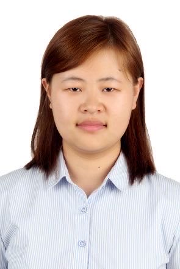

Lu Chen

Summary
I am an organised, efficient and hard working person, and am willing to discover and accept new ideas which can be put into practice effectively. I am a good listener and learner, able to communicate well with a group and on an individual level. I am able to motivate and direct my talents and skills to meet objectives.
Education
Friedrich-Alexander-Universität Erlangen-Nürnberg
Medical Engineering (Medical Electronics) Master
Sep 2013 - April 2017
- GPA: 1.9 / 1.0
- Related Courses: The principle of CT, PET, SPECT, MRI, Digital Signal Processing, Analog/Digital Electrical System,
Image and Video Compression, FPGA-Design with VHDL, Medical Electronics, Deep learning, Computational Magnetic
Resonance Imaging, MRI Sequence Programming
Southern Medical University
Medical Engineering Bachelor
Sep 2012 - Jul 2017
- GPA: 3,34/ 4.0 (Top 7%)
- Honors/Awards:
- The third Scholarship (2014-2015)
- The Second Scholarship (2015-2016)
- Relevant Course: the Principle of Medical Electronic-Instrumentation, Analog Electronics, Digital Electronics
Project Experience
Magnetic Resonance Image Reconstruction Algorithm Implementation
- Learned the principles of MRI image reconstruction algorithms.
- Implemented MRI image reconstruction algorithms under the guidance of tutor: partial K-space data reconstruction
(POCS algorithm, Margosian algorithm), parallel imaging algorithms (SENSE, SMASH), compression sensing, deep
learning algorithms.
Localization of Different Permanent Magnets for Integration into Capsule Endoscopes in Static and Dynamic Scenarios
- Utilized the differential magnetic localization method to evaluate the localization accuracy of magnets of different sizes
for integration into commercial capsule endoscopes.
- Built a"8-shaped"3D model to study the trajectory tracking performance of the magnets.
- Analyzed the trajectory tracking performance(distance error)of the magnets based on the 3D model to investigate the
possibility of tracking complex trajectory.
Magnetic Sensor Calibration and Evaluation for the Differential Static Magnetic Localization
Method for Capsule Endoscopy
- Conducted research to investigate the impact of ferromagnetic materials on magnetic sensor readings.
- Designed and conducted experiments to explore the effect of various ferromagnetic objects on magnetic sensor
readings, including phones, laptops, and heaters.
- Tested whether the measured geomagnetic fields of a sensor pair can be approximately the same when interference
from ferromagnetic materials exists.
Web Development Project
Personal Website
Work Experience
Participation in major exhibitions as a representative exhibitor
- Such as Medica in Dusseldorf and Spielwarenmesse in Nuremberg. During the exhibition period.
- Contacting domestic companies.
- setting up booths and exhibiting the company's products.
- Reception potential customers, answering their questions, introducing the company's products and guiding them to video
conference with the domestic staff.
- Reception old customers, asking them questions about product quality and future needs.
Skills, Certification
-
Skills: Java(basic), C(basic), C++(basic), VHDL(basic), Matlab(good),Python(basics)
- Languages: German(C1), English (IELTS-6.5), Chinese(native)
Hobbies
Travel, Workout, Hiking